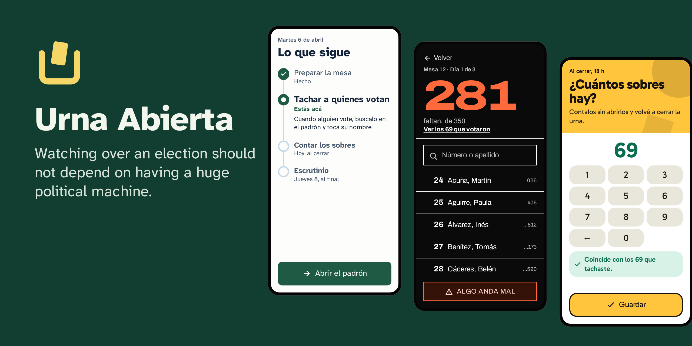

The free app to organize your poll watchers
Your data on your server. Works with no signal. Anyone can use it, from the first time.
For Windows, macOS and Linux. Free. It is in development: its first real test is in April 2027, so before using it run a drill.
If your roll is a scanned PDF, also download the roll reader: it reads it on your computer.

Why it exists
An election is also won at the tables: someone has to be there, know who voted, say when something is wrong and look after the count until the end. Today, doing that well takes a structure only big parties have, and that is an advantage that should not exist.
I am making Urna Abierta so that a student group or a small party only needs a free app, its own server and a little setup time. It is a personal project of mine, and it does not belong to any party.
Each person only sees their own work
No menus: one question per screen, one main button and a plan that tells you what comes next.
Poll watcher
Gets in with a link, crosses out who votes even with no signal, counts the envelopes each night and enters the vote count.
District chief
Sees first the tables that need them, and calls them with one tap.
Administration
Sets up the party and the team once, and creates an election whenever needed.
Traffic light and statistics
With separate permissions: one notes down one person at a time, and the other only sees numbers, never names.
What makes it different
Your data is yours
Each party uses its own server. The project hosts nothing and receives nothing: no central server, no telemetry.
Works with no signal
Many classrooms have no connection. Everything is saved on the phone first and sent when it returns.
No server bill
It aims at free tiers: it was measured with 1 GB of memory and a quarter of a processor.
Reads your rolls
It reads a scanned PDF with a model that runs on your computer, without sending the roll to anyone. An Excel or CSV spreadsheet loads straight in.
With the law in mind
It brings permissions, a log and tools to handle requests from people and erase data at the end. Complying is still up to the party.
Free software
AGPL license. You can read the code, modify it and share it.
With the look you want
Five themes, in light and dark. You choose with a preview when installing, and each person can change it on their phone. You can also make your own.

It installs in three questions
Where it will live
It creates a server on Oracle, AWS or Google with your account, installs on one you already have, gives you a text to paste, or tries it on your computer.
How to read the rolls
On your computer, with the roll reader, which is the recommended way because a roll has people's data.
How it looks
You choose the theme by looking at it. At the end, it gives you the address and a key for your backups.
What to download
The installer
It installs Urna Abierta on your server. It is all you need to start.
Download the installerThe roll reader
Only if your roll is a scanned PDF: it reads it on your computer, without sending it anywhere, and builds the file for the app.
Download the readerWhere it can live
| Provider | Cost | Keep in mind |
|---|---|---|
| Oracle Cloud | Free with no time limit | It may reclaim idle instances, and sometimes there is no capacity |
| AWS | Free for up to 6 months | Enough for one election. Then the account closes |
| Google Cloud | About USD 3.65 a month | The machine is free, and you pay for the IP address |
These plans change often: confirm on each provider's page. There is a step by step guide.
The installer may be unsigned, so your computer will warn you. Download it only from the releases page and check its SHA-256. The installation guide explains each warning.
Who answers for the data
Your party. You install it, you run it and you decide what gets loaded. The project sees nothing: it has no way to. Before using it, read the legal information.